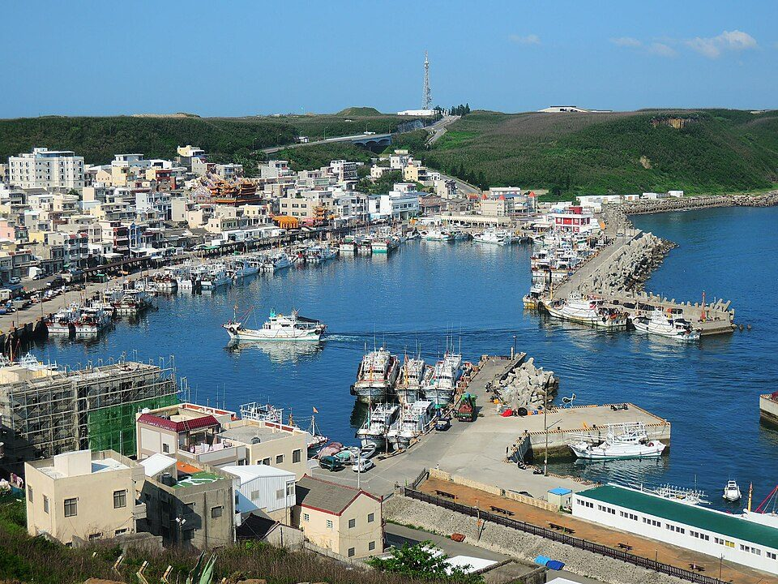
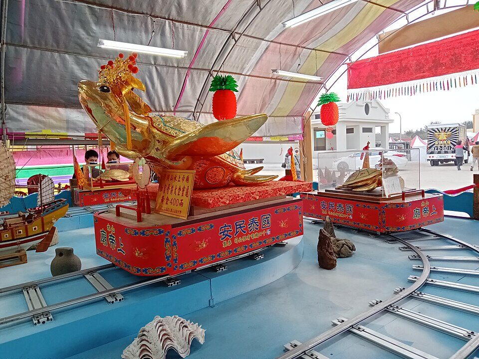

元宵夜，到外垵看漁火
2027 年 2 月 19 到 21 日，三天兩夜，五位大人帶小魚乾去澎湖。

外垵漁港。2/20 晚上，港裡一兩百艘漁船會停航點燈。
三天怎麼走
每天一個主景點、一頓重點餐。點開任何時間點看怎麼去、付款、訂位與小魚乾要注意的事。
外垵漁港的夜晚。全景最好在三仙塔，近看在漁港邊。
外垵漁火讚元宵
阿嬤最想參加的活動，也是這趟的核心。
- 在哪裡西嶼鄉外垵村，溫王宮與外垵漁港；從馬公開車約 45 分鐘，經跨海大橋
- 哪一晚元宵正日（正月十五），2027 年是 2/20（六）；漁船點燈從元宵起連亮三晚，預計 2/20 到 2/22
- 有什麼溫王宮點燈、擲吉祈福（拋麻糬、糖果、紅包）、過平安橋、王爺夜巡遶境、神獸武轎與舞龍舞獅、港邊市集
- 往年時段傍晚起人潮湧入；煙火約 19:00、21:00、22:40（2019 年記錄）。2027 年時段、交通管制與接駁，以 1 月公告為準
- 安全2024 年擲吉時有人被拋下的東西打傷眼睛；同晚三仙塔附近乾草起火。小魚乾遠離擲吉範圍，觀賞點避開乾草叢
- 延期2025 年因天候延後兩天，是第一次延期；若 2027 年也延期，見下方問題「活動延期怎麼辦」
資料來源：自由時報 2024、2025、2026 年外垵元宵報導、中央社 2025/02/14、澎湖國家風景區管理處；2026/10/20、11/23 查證。
機票、住宿、租車
訂位代號、機票號碼與訂房編號都在私人文件，這裡只放時刻、金額與條件。
機票：去回都是華信
- 報到起飛前 30 分鐘一定要完成；劃位要出示與機票同名的身分證件，以及購票用的那張信用卡
- 網路報到起飛前 24 小時到 1 小時，華信官網或 App
- 行李免費託運每人 10 公斤；手提 7 公斤一件
- 敬老票報到出示本人身分證、健保卡或護照正本，不符要現場補全額差價
兩家航空這兩天的全部班次
| 2/19 起飛 | 抵達 | 航空公司 | 班號 |
|---|---|---|---|
| 07:00 | 08:00 | 華信 | AE361 |
| 07:15 | 08:15 | 立榮 | B7-8601 |
| 08:30 | 09:30 | 立榮 | B7-8607 |
| 10:20 | 11:20 | 立榮 | B7-8609 |
| 10:55 | 11:55 | 華信 | AE367 |
| 11:45 | 12:45 | 立榮 | B7-8615 |
| 13:45 | 14:45 | 華信 | AE371 |
| 15:00 | 16:00 | 立榮 | B7-8617 |
| 16:00 | 17:00 | 華信 | AE375 |
| 18:00 | 19:00 | 立榮 | B7-8619 |
| 18:40 | 19:40 | 華信 | AE377 |
| 19:35 | 20:35 | 華信 | AE385 |
| 2/21 起飛 | 抵達 | 航空公司 | 班號 |
|---|---|---|---|
| 08:40 | 09:35 | 華信 | AE362 |
| 08:50 | 09:45 | 立榮 | B7-8602 |
| 10:05 | 11:00 | 立榮 | B7-8608 |
| 12:05 | 13:00 | 立榮 | B7-8610 |
| 12:50 | 13:45 | 華信 | AE368 |
| 13:20 | 14:15 | 立榮 | B7-8616 |
| 15:20 | 16:15 | 華信 | AE372 |
| 17:40 | 18:35 | 華信 | AE376 |
| 19:20 | 20:15 | 立榮 | B7-8618 |
| 20:00 | 20:55 | 立榮 | B7-8620 |
| 20:20 | 21:15 | 華信 | AE378 |
| 21:10 | 22:05 | 華信 | AE386 |
兩家訂票頁依實際日期查證（2026/10/19 到 10/20）。
澎澄飯店，2 晚
- 地址
- 馬公市同和路 168 號
- 電話
- 06-923-5678・0800-238-168
- 房間
- 園景澎澄客房（爸爸媽媽與小魚乾，一張 200 公分大床、有浴缸）；園景探索客房（阿公阿嬤與瑄瑄阿姨，兩張 180 公分大床）
- 時間
- 16:00 後入住、11:00 前退房；不含早餐（2 樓全日餐廳 06:30 到 10:00 可現場加點）
- 金額
- 兩間兩晚 NT$14,800；已付訂金 NT$4,440，入住時付 NT$10,360
- 取消
- 2027/2/5 前免費取消；之後依觀光局定型化契約遞減
- 幼兒備品
- 訂房時備註借嬰兒澡盆、嬰兒沐浴備品、消毒鍋；書面確認還沒取得（見待辦）
- 設施
- 7 樓公共設施：11 到 3 月戶外 07:00 到 17:00、室內 07:00 到 21:00；B1 停車場房客優先
租車：現代 Custin 7 人座，爸爸開
- 租車公司
- 澎湖鴻達租賃，家族常合作的租車行
- 電話
- 0987-989168・0979-989168
- 車型
- 現代 Custin，7 人座（5 大 1 小）
- 取車
- 2/19 約 12:30，馬公機場
- 還車
- 2/21 14:20，馬公機場
- 兒童座椅
- 已預約一張兒童安全座椅；交還車時間直接跟租車公司聯絡
- 飯店接駁
- 訂房附來回機場接駁；改成租車後用不到，寫信給飯店時一併取消
餐廳
都要先訂位，訂位時問兒童椅，並告訴店家有一位不能吃海藻與昆布高湯。
| 哪一餐 | 餐廳 | Google 評分 | 營業（當天） | 幼兒友善 |
|---|---|---|---|---|
| 2/19 午 | 華珍活海鮮 馬公三民路 | 4.4（1,326 則） | 10:00 到 14:00、16:30 到 22:00 | 未查到，訂位時問 |
| 2/19 晚 | 澎漁宴 馬公海埔路 | 4.4（1,934 則） | 11:30 到 13:30、17:00 到 21:00 | 未查到；評論提醒客滿常見 |
| 2/20 午 | 吳家小館 白沙講美村 | 4.8（563 則） | 11:00 到 13:30 | 未查到 |
| 2/20 午備選 | 清峰海鮮 白沙講美村 | 4.5（1,510 則） | 11:00 到 14:00、17:30 到 20:00 | 未查到 |
| 2/20 晚 | 漁村川菜活海鮮 西嶼外垵 | 4.4（522 則） | 11:00 到 14:00、17:00 到 20:00 | 未查到；元宵當晚人多 |
| 2/20 晚備選 | 海村川味活海鮮 西嶼外垵 | 4.3（244 則） | 11:00 到 14:00、17:00 到 20:30 | 未查到 |
| 2/21 午 | 668 海鮮 馬公信義路 | 4.6（1,100 則） | 11:00 到 13:30、17:00 到 20:30 | 未查到 |
評分與營業時間是 Google 地圖 2026/11/23 的資料，春節前後可能變動，1 月訂位時再確認。外垵港邊另有外垵烤小管（4.5）、三山商號功夫刈包（4.7）這類小吃。
先想好的幾件事
風很大或下雨怎麼辦
2 月澎湖東北季風很強，海邊體感比氣溫冷很多。2/20 白天如果風大或下雨，大菓葉玄武岩和漁翁島燈塔都跳過，改在馬公找室內的地方，晚上外垵照常。App 會在出發前兩週開始顯示預報與風速。
外垵活動延期怎麼辦
2025 年曾因天候延後兩天。如果 2027 年也延後，正日活動會落在 2/22（一）。漁船點燈連亮三晚，2/20 晚上應該還看得到部分漁火；想看正日活動，回程可以改搭 2/21 晚上的華信 20:20 或 21:10，或延後一天（全額票可退，手續費 10%；飯店加住要另訂）。1 月公告出來後再決定。
阿嬤想看到最後一輪煙火
預設 20:00 離開外垵，小魚乾在車上睡。阿嬤想待到最後：小魚乾在停好的車上睡、一位大人陪，其他人留下來看，大約 23:00 回馬公。夜路與人潮要慢慢開。
2/19 晚上可以先去外垵嗎
2026 年外垵的元宵市集在正月十四就提前開張，所以 2/19 晚上可能也有市集與漁火。抵達日照家規只吃飯、早點休息，所以沒有排；阿嬤想先去逛，可以晚餐後開車過去，約 45 分鐘。
乞龜是什麼
澎湖元宵的傳統：廟裡用米、麵線、金飾等做成大龜，信眾擲筊「乞」回家祈福，隔年再加倍還願。馬公天后宮、山水上帝廟、鎖港北極殿等廟宇都有，活動常延續到正月十七、十八。2/21 往機場前會順路經過山水上帝廟。

山水上帝廟的元宵乞龜。
出發前要做的事
依時間排序；完成的收在最下面。打包清單在旅途 App，可以勾選。